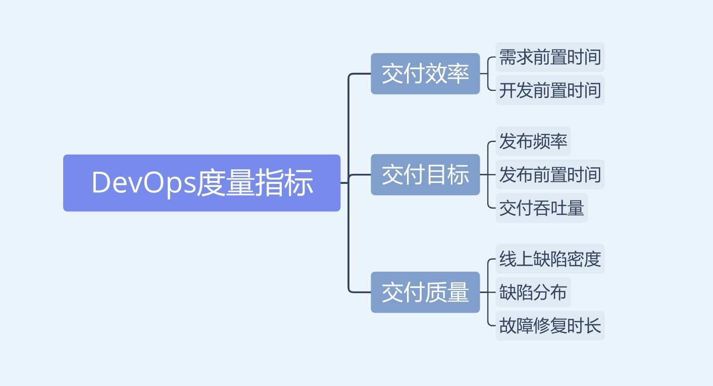
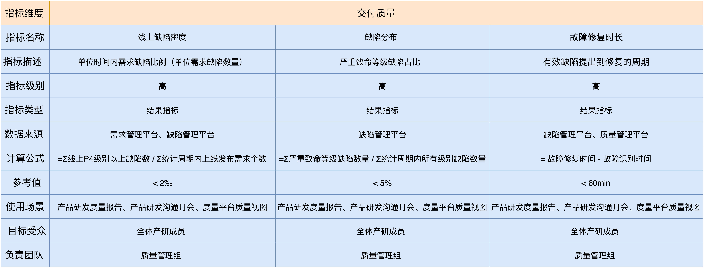

- 00 开篇词 从默默无闻到风靡全球，DevOps究竟有什么魔力？.md.html
- 01 DevOps的“定义”：DevOps究竟要解决什么问题？.md.html
- 02 DevOps的价值：数字化转型时代，DevOps是必选项？.md.html
- 03 DevOps的实施：到底是工具先行还是文化先行？.md.html
- 04 DevOps的衡量：你是否找到了DevOps的实施路线图？.md.html
- 05 价值流分析：关于DevOps转型，我们应该从何处入手？.md.html
- 06 转型之路：企业实施DevOps的常见路径和问题.md.html
- 07 业务敏捷：帮助DevOps快速落地的源动力.md.html
- 08 精益看板（上）：精益驱动的敏捷开发方法.md.html
- 09 精益看板（下）：精益驱动的敏捷开发方法.md.html
- 10 配置管理：最容易被忽视的DevOps工程实践基础.md.html
- 11 分支策略：让研发高效协作的关键要素.md.html
- 12 持续集成：你说的CI和我说的CI是一回事吗？.md.html
- 13 自动化测试：DevOps的阿克琉斯之踵.md.html
- 14 内建质量：丰田和亚马逊给我们的启示.md.html
- 15 技术债务：那些不可忽视的潜在问题.md.html
- 16 环境管理：一切皆代码是一种什么样的体验？.md.html
- 17 部署管理：低风险的部署发布策略.md.html
- 18 混沌工程：软件领域的反脆弱.md.html
- 19 正向度量：如何建立完整的DevOps度量体系？.md.html
- 20 持续改进：PDCA体系和持续改进的意义.md.html
- 21 开源还是自研：企业DevOps平台建设的三个阶段.md.html
- 22 产品设计之道：DevOps产品设计的五个层次.md.html
- 23 持续交付平台：现代流水线必备的十大特征（上）.md.html
- 24 持续交付平台：现代流水线必备的十大特征（下）.md.html
- 25 让数据说话：如何建设企业级数据度量平台？.md.html
- 26 平台产品研发：三个月完成千人规模的产品要怎么做？.md.html
- 27 巨人的肩膀：那些你不能忽视的开源工具.md.html
- 28 迈向云端：云原生应用时代的平台思考.md.html
- 29 向前一步：万人规模企业的DevOps实战转型案例（上）.md.html
- 30 向前一步：万人规模企业的DevOps实战转型案例（下）.md.html
- 期中总结 3个典型问题答疑及如何高效学习 (1).md.html
- 期中总结 3个典型问题答疑及如何高效学习.md.html
- 期末总结 在云时代，如何选择一款合适的流水线工具？.md.html
- 特别放送（一）成为DevOps工程师的必备技能（上）.md.html
- 特别放送（三）学习DevOps不得不了解的经典资料.md.html
- 特别放送（二）成为DevOps工程师的必备技能（下）.md.html
- 特别放送（五）关于DevOps组织和文化的那些趣事儿.md.html
- 特别放送（四）Jenkins产品经理是如何设计产品的？.md.html
- 结束语 持续改进，成就非凡！.md.html
- 捐赠
19 正向度量：如何建立完整的DevOps度量体系？
你好，我是石雪峰。到今天为止，我用14讲的篇幅给你通盘梳理了DevOps的工程实践，基本涵盖了工程实践的方方面面。但是，就像那句经典的“不仅要低头看路，还要抬头看天”说的一样，我们花了这么大的力气投入工程实践的建设，结果是不是符合我们的预期呢？
所以，在工程实践的最后两讲，我想跟你聊聊度量和持续改进的话题，今天先来看看DevOps的度量体系。
我相信，对于每个公司来说，度量都是必不可少的实践，也是管理层最重视的实践。在实施度量的时候，很多人都把管理学大师爱德华·戴明博士的“If you can’t measure it, you can’t manage it”奉为实践圭臬。
但是，回过头来想想，有多少度量指标是为了度量而度量的？花了好大力气度量出来的数据会有人看吗？度量想要解决的，到底是什么问题呢？
所以，度量不是目的，而是手段，也就是说度量的目标是“做正确的事”，而度量的手段是“正确地做事”。
那么，什么才是度量领域正确的事情呢？如果想要弄清楚DevOps中的度量长什么样子，关键就是要回到DevOps对于软件交付的核心诉求上。
简而言之，对于IT交付来说，DevOps希望做到的就是持续、快速和高质量的价值交付。价值可以是一个功能特性，可以是用户体验的提升，也可以是修复阻塞用户的缺陷。
明确了这一点，也就明确了DevOps的度量想要达到的目标，就是为了证明，经过一系列的改进工作，与过去相比，团队的交付速度更快了，交付质量更高了。如果度量的结果不能导向这两个核心目标，那么显然就走错了方向，也就得不到实际想要的结果了。
如果只有大方向，往往还是不知道具体要怎么做。这个时候，就需要把目标和方向拆解成一系列的度量指标了。那么，怎样定义好的度量指标和不好的度量指标呢？
如何定义指标？
前几天，我被派到某仓库做流水线工人，这个经历让我深刻地理解了工业制造和软件行业的巨大差异。
如果你现在问我，决定工业生产流水线速度的是什么？我可以告诉你，答案就是，流水线本身。因为流水线的传送带的速度是一定的，产线速度也就可以直观地量化出来。
但是，软件开发不像工业制造，开发的过程看不见摸不着，除了工程师真正编写代码的时间，还要包括构思、设计和测试的时间，以及完成各类流程的时间等等。这个过程中可能还存在着各种并行工作的切换和打断，所以，没法用工业流水线的方式来衡量开发人员的效率。
于是，为了达到量化的目的，很多指标就被人为地设计出来了。
比如，以准时提测率这个指标为例，这个指标采用的是百分制的形式，按时提测得100分，延期一天得90分，延期两天得70分，以此类推，要是延期五天及以上，就只能0分了。这样的指标看起来似乎足够客观公平，但是仔细想想，延期1天1小时和延期1天23小时，似乎也没有太大区别，得分的高低并不能反映真实的情况。
在各个公司的度量体系中，类似的人造指标可谓比比皆是。可见，不好的指标总是五花八门，各有各的样子。不过，好的指标大多具备一些典型的特征。
1.明确受众。
指标不能脱离受众而单独存在，在定义指标的同时，要定义它所关联的对象，也就是这个指标是给谁看。
不同的人关注点自然也不一样，即便指标本身看起来没有什么问题，但是如果使用错位了，也很难产生预期的价值。比如，给非技术出身的老板看单元测试的覆盖率，就没有什么太大意义。
2.直指问题。
在NBA中，优秀的球员总是自带体系的。所谓体系，就是围绕这个球员的核心能力的一整套战术打法，可以解决球队的实际问题，所以，这个球员的表现就成了整支球队的“晴雨表”。
而好的指标也应该是直指问题的，你一看到这个指标，就能意识到问题所在，并自然而然地进行改进，而不是看了跟没看见一样，也不知道具体要做什么。
比如，构建失败率很高，团队就会意识到代码的提交质量存在问题，需要加强事前的验证工作。
3.量化趋势。
按照SMART原则，好的指标应该是可以衡量的，而且是可以通过客观数据来自证的。
比如，用户满意度这种指标看起来很好，但很难用数据衡量；再比如，项目达成率这个指标，如果只是靠手工填写，那就没啥说服力。
同时，好的度量指标应该能展现趋势。也就是说，经过一段时间的沉淀，指标是变好了，还是变坏了，距离目标是更近了，还是更远了，这些都应该是一目了然的。
4.充满张力。
指标不应该孤立存在，而是应该相互关联构成一个整体。好的指标应该具有一定的张力，向上可以归并到业务结果，向下可以层层分解到具体细节。这样通过不同维度的数据抽取，可以满足不同视角的用户需求。
比如，单纯地度量需求交付个数，就没有太大意义。因为需求的颗粒度会直接影响数量，如果只是把一个需求拆成两个，从而达到需求交付速度加倍的效果，这就失去了度量的意义。
定义指标有哪些原则？
明白了好的度量指标的典型特征，接下来，我们就来看看定义DevOps度量的五条原则：
- 全局指标优于局部指标：过度的局部优化可能对整体产出并无意义，从而偏离了度量的核心，也就是提升交付速度和交付质量。
- 综合指标优于单一指标：从单一维度入手会陷入只见树木不见森林的困境，综合指标更加客观。所以，要解决一个问题，就需要一组指标来客观指引。
- 结果指标优于过程指标：首先要有结果指标，以结果为导向，以过程为途径，一切过程指标都应该归结到结果指标。
- 团队指标优于个人指标：优先考核团队指标而非个人指标，团队共享指标有助于形成内部合力，减少内部的割裂。
- 灵活指标优于固化指标：指标的设立是为了有针对性地实施改进，需要考虑业务自身的差异性和改进方向，而非简单粗暴的“一刀切”，并且随着团队能力的上升，指标也需要适当的调整，从而不断挑战团队的能力。
哪些指标最重要？
基于以上的指标特征和指导原则，并结合业界大厂的一些实践，我给你推荐一套DevOps度量体系。
虽然各个公司的度量指标体系都不尽相同，但是我认为这套体系框架足以满足大多数场景，如下图所示：

1.交付效率
- 需求前置时间：从需求提出到完成整个研发交付过程，并最终上线发布的时间。对业务方和用户来说，这个时间是最能客观反映团队交付速度的指标。这个指标还可以进一步细分为需求侧，也就是从需求提出、分析、设计、评审到就绪的时长，以及业务侧，也就是研发排期、开发、测试、验收、发布的时长。对于价值流分析来说，这就代表了完整的价值流时长。
- 开发前置时间：从需求进入排期、研发真正动工的时间点开始，一直到最终上线发布的时长。它体现的是研发团队的交付能力，也就是一个需求进来后，要花多久才能完成整个开发过程。
2.交付能力
- 发布频率：单位时间内的系统发布次数。原则上发布频率越高，代表交付能力越强。这依赖于架构结构和团队自治、独立发布的能力。每个团队都可以按照自己的节奏安全地发布，而不依赖于关联系统和发布窗口期的约束。
- 发布前置时间：指研发提交一行代码到最终上线发布的时间，是团队持续交付工程能力的最直观的考查指标，依赖于全流程自动化的流水线能力和自动化测试能力。这也是DevOps状态报告中的核心指标之一。
- 交付吞吐量：单位时间内交付的需求点数。也就是，单位时间内交付的需求个数乘以需求颗粒度，换算出来的点数，它可以体现出标准需求颗粒度下的团队交付能力。
3.交付质量
- 线上缺陷密度：单位时间内需求缺陷比例，也就是平均每个需求所产生的缺陷数量，缺陷越多，说明需求交付质量越差。
- 线上缺陷分布：所有缺陷中的严重致命等级缺陷所占的比例。这个比例的数值越高，说明缺陷等级越严重，体现了质量的整体可控性。
- 故障修复时长：从有效缺陷提出到修复完成并上线发布的时间。一方面，这个指标考查了故障定位和修复的时间，另外一方面，也考查了发布前置时间，只有更快地完成发布上线过程，才能更快地修复问题。
这三组、八项指标体现了团队的交付效率、交付能力和交付质量，从全局视角考查了关键的结果指标，可以用于展现团队DevOps改进的效果和价值产出。不过，定义指标只能说是DevOps度量的一小步，只有让这些指标发挥价值，才能说是有意义的度量。
如何开启度量工作？
在企业内部开启度量工作，可以分为四个步骤。
第1步：细化指标。
一个完整的指标，除了定义之外，还需要明确指标名、指标描述、指标级别（团队级/组织级）、指标类型、适用场景范围及目标用户、数据采集方式和标准参考值。
以交付指标为例，我汇总了一份细化后的指标内容，你可以参考下表。其实不仅仅是核心结果指标，只要是在度量体系内定义的指标，都需要进行细化。

关于指标的参考值，对于不同的业务形态，参考值也有所不同。比如就单元测试覆盖率而言，无人车的业务和普通的互联网业务的差别可能会非常大。
所以参考值的选定，需要结合业务实际来分析并达成共识。而且，度量指标本身也需要建立定期更新的机制，以适应于整个团队的能力。
第2步：收集度量数据
度量指标需要客观数据的支撑，而数据往往都来源于各个不同的平台。所以，在定义指标的时候，你需要评估是否有足够的客观数据来支撑这个指标的衡量。
在采集度量数据的初期，我们面临的最大问题不仅是系统众多、数据口径不一致，还包括数据的准确性。
举个例子，比如开发交付周期这个指标，一般都是计算一个需求从开始开发到线上发布的时间长度。但是，如果开发人员迟迟不把这个需求设置为“已解决”或者“待测试”状态，那么统计出来的开发周期就存在大量的失真，很难反映出客观、真实的情况。
这就需要从流程和平台两个层面入手解决。比如，一方面，从流程层面制定研发操作规范，让每一名研发人员都清楚在什么时间点需要改变需求卡片状态；另一方面，建设平台能力，提供易用性的方式辅助研发，甚至自动流转需求状态。
第3步：建立可视化平台。
度量指标毕竟是要给人看的，度量数据也需要有一个地方可以收集和运算，这就依赖于度量可视化平台的建设了。关于如何建设一个支持多维度视图、对接多系统数据，以及灵活可编排的度量平台，我会在工具篇给你分享一个案例，帮助你破解度量平台建设的关键问题。
第4步：识别瓶颈并持续改进。
当数据做到了可信和可视化之后，团队面临的问题和瓶颈会自然而然浮现出来。如何通过指标牵引并驱动团队实施改进，这也是下一讲我们要讨论的核心内容。
我给你提供一些常用的度量指标和相关定义，你可以点击网盘链接获取，提取码是c7F3。需要注意的是，指标宜少不宜多，宜精不宜烂，对于企业的DevOps度量而言，这也是最常见的问题，定义了一大堆的指标，却不知道要拿来做什么。
只有将指标的定义细化，并在团队内部达成共识，仔细甄别数据的完整和有效性，并做到满足不同维度视角的可视化，才具备了驱动团队进行改进的基础，这一点请你一定要记住。
总结
总结一下，DevOps度量想要达到的目标，就是证明团队经过一系列的改进工作，与过去相比，交付速度更快了，交付质量也更高了。所以，交付效率和交付质量是最为核心的两个目标。只有围绕这两个目标建立的度量体系，才没有走错方向。
好的指标一般都具备四种特性：明确受众、直指问题、量化趋势和充满张力。结合指标特征和指导原则，以及业界大厂的一些实践，我给你介绍了三组、八项核心结果指标，包括效率指标、能力指标和质量指标。最后，我给你介绍了建立度量体系的四个步骤，希望可以帮助你一步步地搭建持续改进的基石。
度量是把双刃剑，做得不好反而会伤害团队的士气。如果本末倒置，把度量结果跟个人的绩效相绑定，就很容易使度量这个事情变了味道。很多大公司反反复复地在建立度量体系，就是因为前一个体系被人摸透，变成了数字游戏，于是就失去了原有的目的，只能推倒重来。
还是那句话，度量只是一种手段，而非目的。归根结底，度量的真正目的还是团队效率的提升和业务的成功。只有通过度量激起团队自发的改进意愿，提升团队改进的创造性和积极性，才是所谓的“正向度量”，这也是我最想传达给你的理念。
思考题
你所在的企业是否也在建设DevOps的度量体系呢？你觉得，这些度量指标数据对改进当前的工作是否起到了正面作用呢？
欢迎在留言区写下你的思考和答案，我们一起讨论，共同学习进步。如果你觉得这篇文章对你有所帮助，也欢迎你把文章分享给你的朋友。
© 2019 - 2023 Liangliang Lee. Powered by gin and hexo-theme-book.